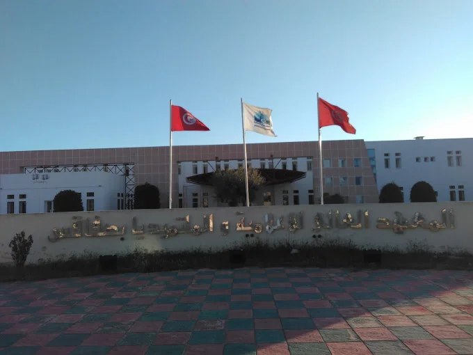

-
Institut Supérieur d'Informatique et du Multimédia de Sfax
- Cycle préparatoire intégré (2 ans)
- 3ᵉ année de licence en Big Data et analyse de données
L'Institut supérieur d'informatique et de multimédia de Sfax ou ISIMS est un établissement de l'enseignement supérieur tunisien basé au sein du pôle technologie de Sakiet Ezzit près de Sfax. Créé à la suite du décret présidentiel du 14 août 2001, il est spécialisé dans les domaines de l'informatique et du multimédia.
 -
Institut International Technologique
- 1ʳᵉ année du cycle ingénieur en génie informatique
L’Institut International de Technologie accueille plus de 1 000 étudiants internationaux, dont plus de 700 en ingénierie, originaires de tous les continents. Mobilité étudiante (L,M,D), parcours bi-diplômants, Erasmus , accords d’échanges d’étudiants, et collaborations internationales.